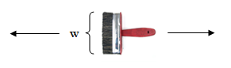

Question Code : 1017
Problem Name : Problem 1017 - Brush (III)
Problem Tags :
Dynamic Programming
Problem Statement :
Samir returned home from the contest and got angry after seeing his room dusty. Who likes to see a dusty room after a brain storming programming contest? After checking a bit he found a brush in his room which has width w. Dusts are defined as 2D points. And since they are scattered everywhere, Samir is a bit confused what to do. He asked Samee and found his idea. So, he attached a rope with the brush such that it can be moved horizontally (in X axis) with the help of the rope but in straight line. He places it anywhere and moves it. For example, the y co-ordinate of the bottom part of the brush is 2 and its width is 3, so the y coordinate of the upper side of the brush will be 5. And if the brush is moved, all dusts whose y co-ordinates are between 2 and 5 (inclusive) will be cleaned. After cleaning all the dusts in that part, Samir places the brush in another place and uses the same procedure. He defined a move as placing the brush in a place and cleaning all the dusts in the horizontal zone of the brush.
You can assume that the rope is sufficiently large. Since Samir is too lazy, he doesn't want to clean all the room. Instead of doing it he thought that he would use at most k moves. Now he wants to find the maximum number of dust units he can clean using at most k moves. Please help him.
Code :
#include <bits/stdc++.h>
using namespace std;
#define pii pair<int,int>
#define vi vector<int>
#define vii vector < pii >
#define si set<int>
#define ll long long int
#define pb push_back
#define mp make_pair
#define fr first
#define se second
#define MOD 1000003
#define MAX 10100
int dp[110][110];
ll y[110];
ll w,n;
int func(int pos,int kr)
{
if (kr == 0){
return 0;
}
else if (pos == n){
return 0;
}
if (dp[pos][kr] != -1)
return dp[pos][kr];
int up = upper_bound(y,y+n,y[pos]+w)-y;
int ret = up-pos;
dp[pos][kr] = max(ret + func(up,kr-1) , func(pos+1,kr));
//cout<<pos<<" "<<kr<<" "<<dp[pos][kr]<<endl;
return dp[pos][kr];
}
int main ()
{
//cout << setprecision(7) << fixed;
#ifndef ONLINE_JUDGE
freopen("input.txt","r",stdin);
#endif
ios_base::sync_with_stdio(false);
int t;
cin>>t;
int cas=1;
while (t--){
memset(dp,-1,sizeof(dp));
cout<<"Case "<<cas++<<": ";
int k;
cin>>n>>w>>k;
int foo;
for (int i=0;i<n;i++){
cin>>foo>>y[i];
}
sort(y,y+n);
cout<<func(0,k)<<endl;
}
return 0;
}